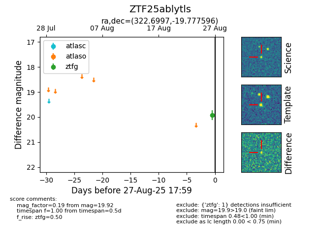

Target ZTF25ablytls at 2025-08-27 17:59, see:
FINK: fink-portal.org/ZTF25ablytls
Lasair: lasair-ztf.lsst.ac.uk/objects/ZTF25ablytls
ALeRCE: alerce.online/object/ZTF25ablytls
alt names
ZTF25ablytls (ztf,fink)
coordinates:
equatorial (ra, dec) = (322.6997,-19.77760)
galactic (l, b) = (30.8512,-43.69577)
photometry
last ztfg=19.92
1 ztfg detections
